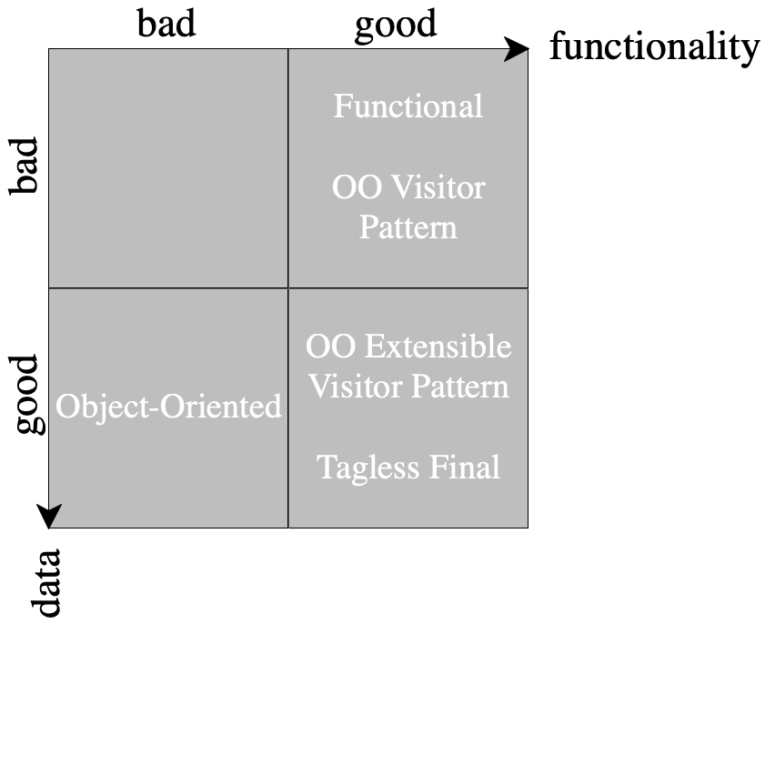
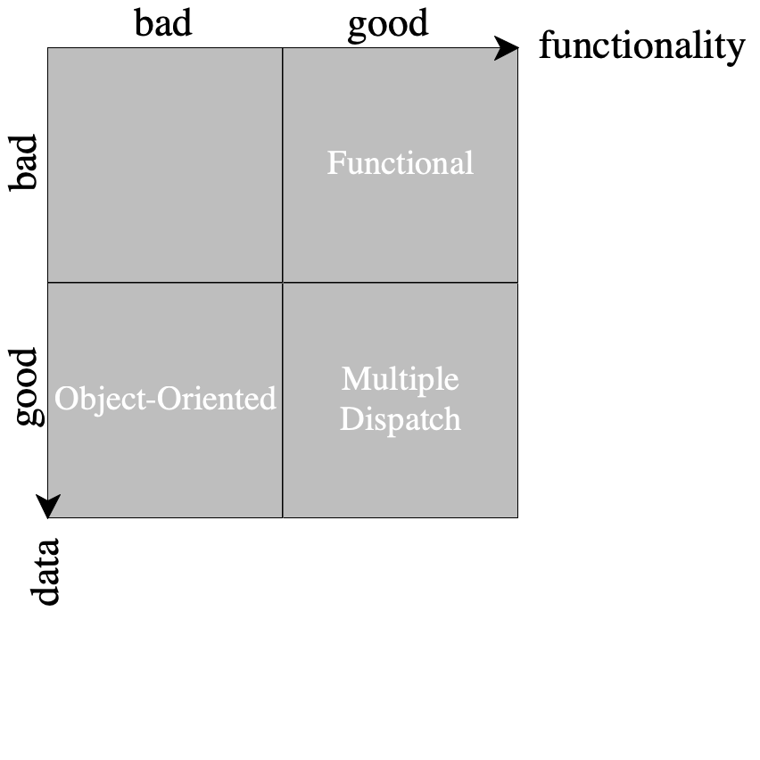
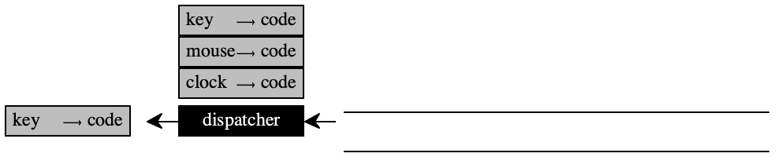

20 —
Friday, 20 March 2020
Presenters (1) Mike Sarfaty & Liam Weldon, (2) Jack Mastrangelo, Jack Loar
Why CPS
Imagine you get a job, your job requires the production of JavaScript or TypeScript, and one day the team has the crazy idea that you should be able to interrupt a (perhaps long-running) event handler. For example, your JavaScript code may implement a simple IDE within the browser for kids to learn how to code.
Which is of course why I put big-bang into Fundamentals I way back in 2005. So how does JavaScript in the browser really work? How does big-bang work? It turns out this is the same question.
Your JavaScript program registers event handlers (possibly via frameworks such as Angular.JS, React.js, or Vue.js) with the JavaScript engine. From this perspective, the engine consists of two pieces: a queue into which events get deposited (by the OS component of the browser) and the dispatcher, which takes the first item in the queue and runs the appropriate piece of code.
the empty queue and dispatcher

a "key" event arrived, possibly with payload

the dispatcher reacts and runs the registered "key" handler
more events arrive, they all go into the queue until the current handler is finished


how can we get to execute a "stop" event that is possibly implemented via a button in the browser?
This is where continuations and continuation-passing come to the rescue.
Halt
The simplest non-local control construct. On occasion a program’s computation reaches such a disastrous state that it must stop the execution, regardless of what else it should have computed.
A Java program may call System.exit in such situations. In Python, the language where everything is done “one way,” you have quit, exit, sys.exit, and os._exit; choose wisely. For Racket and the teaching languages we recommend error to signal an error; the racket/control library also offers abort, a request to stop the program immediately.
When a program is written in continuation=passing style, it is straightforward to implement a stop instruction: a function may simply not use its continuation.
| expression |
| the continuation-passing version | |||||||||||||||||||||
Model PL |
|
|
|
| ||||||||||||||||||||
|
| |||||||||||||||||||||||
Racket |
|
|
|
|
Catch and Throw
Exception handling is another form of non-local control that exists in every one of the programming languages you have chosen for this class. The idea dates back to the early days of Lisp, which in the late 1960s provided ERR and ERRSET. By 1972, it provided the catch-and-throw facility that we study here. For certain reasons, the invention was recently attributed to the CLU programming language in the late 1970s. For example, in Java you may use try, throw, and catch to attempt a computation, raise an exception if it fails, and pursue an alternative direction in response; JavaScript supports the same mechanisms. Python again supports a plethora of facilities: raise, try, except, else, and finally. In Racket we use with-handlers and raise for the same idea. Okay, Rust is different.
[catch AssExpr] evaluates its sub-expression. If it yields an ordinary value, that is the result of the entire expression. If the evaluation of the sub-expression throws a value, it is the result.
[throw AssExpr] evaluates its sub-expression and “throws” its value to the catch expression in whose temporal extent it is currently evaluating—
if any. If none, a throw terminates a program turning the value of its sub-expression into the result of the program.
(struct catch [bdy] #:transparent) (struct throw [bdy] #:transparent) ; type CExpr extends AssExpr with ; – [catch CExpr] ; – [throw CExpr]
evaluating the program |
| yields |
| remarks | ||||
[throw 42] |
| 42 |
| there is no catch to stop the throw | ||||
|
| |||||||
|
| 43 |
| the catch stops the throw and evaluates the node expression | ||||
|
| |||||||
|
| 43 |
| the catch on the right plays no role; it is evaluated when the interpreter gets to throw | ||||
|
|
Remember “channels of communication” from 16 —
Gradual Types? This is an example why we need to protect those.
|
| 21 |
| the inner catch plays no role, because the interpreter never gets to it; indeed, it throws the wrong kind of value so that’s a “good thing” | ||||||
|
| 21 |
| each throw returns to its closest catch |
at any point during program evaluation, the cps transformation must designate a “throw” continuation;
throw uses this continuation as the designated continuation, calling it with the result of its sub-expression instead of the one that represents its control context;
catch changes this designated continuation while its body is evaluated and changes it back once the evaluation produces or throws a value.
We assume the Java convention here that identifiers starting with a dollar sign cannot be used by programmers; they are only acceptable in the context of abstract syntax trees.
- the cps function initializes a global variable named "$escape" that contains the current “throw” continuation:
- the transformation of throw in split-expr ignores the given k and instead dereferences "$escape":
- the transformation of catch in split-expr turns the given k into the new value for "$escape" and evaluates the expression’s bdy in the context of this continuation:
(define (split-expr ae k) (match ae [(catch bdy) [call [fun "current" [sequ (set "$escape" (make-escaper "current" k)) (call [receive-k bdy] "$escape")]] "$escape"]] ...)) The function application [fun current ...] allows us to capture the current value of "$escape" because decl may not have variables on the right-hand side of declarations.
; {Var Var -> CExpr} (define (make-escaper current k) [fun of-catch-escape [sequ [set "$escape" current] [call k of-catch-escape]]])
Stop! What ensures that when catch is evaluated—
Sadly many programmers and even language researchers without
proper training often use the word “scope” instead—
The evaluation of catch distinctly delimits a temporal interval with different ways of reaching the end. The modern terminology for such an interval is (dynamic) extent.
Stopify
So how do we solve the JavaScript problem?
Roughly speaking, you could pipe your source code through a cps function for JavaScript and insert a communication to the dispatcher together with each call to a continuation. If the communication suggests a "stop" event must be handled, the dispatcher can register the current continuation a "resume this continuation" handler, insert a "resume" event into the queue, and move on to the next event.
The Stopify framework realizes just this idea automatically and is already in use at several companies. It is the result of relatively recent research (published at one of PL’s flagship conferences) and you are able to understand this work.
a "stop" event arrives and gets put up front because it is a priority queue

the event handler swaps the current handler’s continuation for the next event
CPS Frees Us From the Meta-Language
We once again turn to the dual nature of programming languages—
The first theorem states that we could use either an interpreter that evaluates function applications (including node) from right to left or left to right, and the result will stay the same.
Theorem interpreterRL{[call (cps p) [fun x x]]} == interpreterLR{[call (cps p) [fun x x]]} for any program p
Stated as a slogan, cps hands the power of flow of control to the source program.
CPS is correct
The second theorem tells us that the continuation-passing transform is correct.
Theorem interpreter{p} == interpreter{[call (cps p) [fun x x]]} for any program p
In particular, when p produces an integer, (cps p) when
applied to the “stop” continuation—
Theorems such as the one above reassure us at the mathematical level but
also have “computational content.” That is, we can formulate them as
property test cases, which can then be subjected to random testing.
Figure 74 shows how we can turn the mathematical
statement into a property, a function from AssExpr to boolean.
Property testing—
Lectures/20/cps-theorem.rkt
#lang racket (require "cps-theorem-imports.rkt") ;; - - - - - - - - - - - - - - - - - - - - - - - - - - - - - - - - - #; {AssExpr -> Boolean} (define (theorem program #:expected [expected #false]) (equal? (or expected (interpret program)) (interpret [call (cps program) [fun r r]]))) ;; - - - - - - - - - - - - - - - - - - - - - - - - - - - - - - - - - ;; "PROOF" (module+ test (require rackunit) (check-true (theorem [node + 1 1])) (check-true (theorem (call (fun x [node + x (node * x 2)]) 10))) (check-true (theorem (call (fun x [if-0 x 43 (node * x 2)]) 10))) (check-true (theorem (call (fun x [sequ [set x [node + x 1]] x]) 42))) (check-true (theorem (decl g (fun x (node * x 10)) (decl f (fun y (if-0 y 1 (call g (call f (node + y -1))))) (call f 3)))))) (provide theorem) Figure 74: The Continuation-Passing-Style Correctness Theorem, Illustrated
Predictive Value and Debugging CPS
The second theorem is also a bit of a design guideline for manually and gradually applying the continuation-passing transformation to a program, possibly in your favorite programming language.
Now take a look at figure 75. It shows an attempt to introduce the continuation-passing style gradually for a program translated from our model language into Racket. Run the example. It will give the same result three times, suggesting that we converted the program properly.
Lectures/20/cps-example.rkt
#lang racket (require "cps-theorem-imports.rkt") (define halt-k (λ (final-result) final-result)) ;; - - - - - - - - - - - - - - - - - - - - - - - - - - - - - - - - - ;; in our model language [call [fun f (node * (call f 10) (call f 20))] [fun x (node + x 42)]] ;; - - - - - - - - - - - - - - - - - - - - - - - - - - - - - - - - - ;; in RACKET (or your favorite language) ((λ (f) (* (f 10) (f 20))) (λ (x) (+ x 42))) ;; - - - - - - - - - - - - - - - - - - - - - - - - - - - - - - - - - ;; equip first function with continuation for delivering result ((λ (f k) (k (* (f 10) (f 20)))) (λ (x) (+ x 42)) halt-k) ;; - - - - - - - - - - - - - - - - - - - - - - - - - - - - - - - - - ;; equip second function for delivering a result, call it with halt-k ((λ (f k) (k (* (f 10 halt-k) (f 20 halt-k)))) (λ (x k) (k (+ x 42))) halt-k)
(interpreter p) == (interpreter [call (cps p) [fun x (raise x)]])
If we do this, we see that evaluating the third Racket expression yields a totally different answer.
Tail Positions and Tail Calls The reason is that halt-k is not called in a special position, namely, a place where there is nothing left to do.
a plain number such as 42 is in tail position.
a plain variable, say x or y, is in tail position.
an (if-0 TST THN ELS) contains three sub-expressions: TST, THN, and ELS. The TST sub-expression is guaranteed not to be in tail position because after it is evaluated one of the other two expressions—
THN or ELS— must be evaluated before the function may return a result. By contrast, the expression THN is in tail position and so is ELS.
a primitive operation of the shape (node o L R) contains two sub-expressions: L and R. Both must be evaluated and after their results become known more is to be computed. In the case of R, we must also compute the result of L. And in the case of L, we must still compute the o of the two values.
a function such as (fun y ...) is in tail position because, like a number, it is a value.
a function call of the shape (call F A) is like a primitive operation. Both F and A must be evaluated and after that the value of F must be called on the value of A.
a (set x R) expression must evaluate R and then perform a mutation on x.
a sequ expressions also contains two sub-expressions. After evaluating the first one though, we can exclusively focus on the second because after its result is known there is nothing left to compute. Ergo, the second sub-expression is in tail position.
AssExpr = Int || (node O AssExpr AssExpr) || (if-0 AssExpr AssExprt AssExprt) || Var || (decl Var AssExpr AssExprt) || (fun Var AssExpr) || (call AssExpr AssExpr) || (set Var AssExpr) || (sequ AssEexpr AssExprt) Every one of these expression is in tail position if it is at the top level of a function body.
The tail position must be inside those sub-expressions that are starred. Evaluating any other sub-expression demands that some other computation must be performed after the expression is done.
When a function call shows up in a tail position it is dubbed a tail call.
All calls of continuations must be tail calls in a gradually converted
expressions. So, in the second Racket expression in
figure 75 the call to k is a tail call; in the
third one it is not. When halt-k simply returns its
argument value, calling a continuation in tail position or not doesn’t
matter; but when halt-k stops—
Lectures/20/cps-correct.rkt
#lang racket (require "cps-theorem-imports.rkt") (define halt-k (λ (final-result) (raise final-result))) ;; - - - - - - - - - - - - - - - - - - - - - - - - - - - - - - - - - ;; in our model language [call [fun f (node * (call f 10) (call f 20))] [fun x (node + x 42)]] ;; - - - - - - - - - - - - - - - - - - - - - - - - - - - - - - - - - ;; in RACKET (or your favorite language) (with-handlers ([number? values]) ((λ (f) (* (f 10) (f 20))) (λ (x) (+ x 42)))) ;; - - - - - - - - - - - - - - - - - - - - - - - - - - - - - - - - - ;; equip first function with continuation for delivering result (with-handlers ([number? values]) ((λ (f k) (k (* (f 10) (f 20)))) (λ (x) (+ x 42)) halt-k)) ;; - - - - - - - - - - - - - - - - - - - - - - - - - - - - - - - - - ;; equip second function for delivering a result, call it with halt-k (with-handlers ([number? values]) ((λ (f k) (k (* (f 10 halt-k) (f 20 halt-k)))) (λ (x k) (k (+ x 42))) halt-k)) ;; - - - - - - - - - - - - - - - - - - - - - - - - - - - - - - - - - ;; continuations constructed and called properly (with-handlers ([number? values]) ((λ (f k) (f 20 (λ (of-20) (f 10 (λ (of-10) (k (* of-10 of-20))))))) (λ (x k) (k (+ x 42))) halt-k))
[call [call [fun k [fun f [call [call f [fun of-20 [[call f [fun of-10 [call k [node + of-10 of-20]]] 10]]] 20]]]] [fun final final]] [fun x (node + x 42)]]
no function ever returns to its caller directly; it always calls a continuation
every function call is in a tail-position